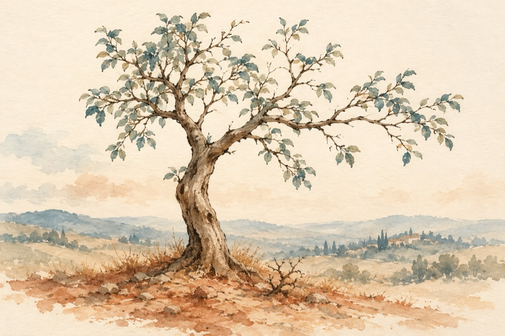

Sfat
Nu poți trece prin această lume
Precum gâsca prin apă
Trebuie să faci ceva anume
Încât oamenii să te perceapă
Copil fiind să spargi o vază, un geam
Să cazi cu nasul de pământ, să te julești
Să-l tragi de coadă și să-l enervezi pe un motan
Punguța cu doi bani de aur s-o găsești
Să mergi la grădiniță deloc voios
Să nu-ți convină, cum la câine mere acre
Să plângi mereu cu dus întors
Să socotești sfaturile ca pe niște palavre
Iar școala să o treci precum gâsca prin apă
Mergând mereu cu tema nefăcută
Și-atunci când profesorul te scoate la tablă
Să iei poziția de mut sau de o mută!
Atunci de toate-acestea le vei face
Vei crește-nalt, frumos și mândru doar de tine
Dar vei rămâne, cum mărul fără roade
Și vei trăi în viață ca un spine.
Vasile Groza